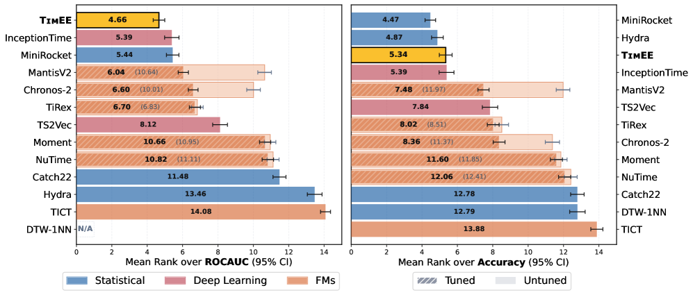

Figure 1 : Attention replacement blocks evaluated in our strict frozen-backbone setting. Blue ❅ markers denote frozen pretrained parameters. The pretrained parameters including W q...
Figure 2 : Overview of the ALER-TI pipeline. (Left) LEA aligns corrupted queries with clean candidates through late-stage masking and candidate-guided query encoding. (Right) The r...
新增 / arXiv 2026-07-08。4.5M 参数模型只用合成 TSC 任务 meta-train，推理时给 support set 和 query 单次前向输出类别分布；适合评估小样本诊断分类和跨装置快速适配。
研究背景
由原简报的核心问题、选取理由和相关性整理，不替代原文背景综述。
许多聚变诊断分类任务样本少、类别定义随实验阶段变化，传统预训练 encoder + 专用 classifier 需要重新训练，也难在推理时直接利用少量标注样本。
从本日报的选取理由看，新增 / arXiv 2026-07-08。4.5M 参数模型只用合成 TSC 任务 meta-train，推理时给 support set 和 query 单次前向输出类别分布；适合评估小样本诊断分类和跨装置快速适配。
核心问题
能否仅用合成时序任务训练一个小型 foundation model，使其在真实 TSC 数据上通过上下文样本直接分类？
对当前主题的关键意义在于：最小实验是用合成聚变先验任务 meta-train 或直接用 TimEE 风格输入，把新 campaign 的少量标注 shot 放入 support set，比较零微调 AUC、FPR 和校准误差。
方法与关键创新

Figure 1 : We compare mean rank across all 128 UCR benchmark datasets. TimEE achieves the lowest mean rank on ROC AUC (left), outperforming all compared methods including task-spec...
Figure 1 : Attention replacement blocks evaluated in our strict frozen-backbone setting. Blue ❅ markers denote frozen pretrained parameters. The pretrained parameters including W q...
用机制分析选择更接近 softmax 行为的线性状态更新，并用固定预算缓存保留关键上下文。
阅读时需要把方法设计与主要结果一起看：摘要报告在大语言模型上保持长上下文检索并优于既有 post hoc baselines。
实验结果
摘要报告在大语言模型上保持长上下文检索并优于既有 post hoc baselines。
局限性
缺少 timestamp-aware 和多采样率实验。
总结
P1 可把它作为长序列主干压缩的机制基线。
研究相关性与启发
未提供
02
在研课题启发：P1 不规则时序与聚变高低频统一建模
ALER-TI：缺失模式对齐的历史片段检索增强
ALER-TI: Aligned Latent Embedding Retrieval for Time Series Imputation
2026-07-08strong_recommend
【P1】原始应用是通用 time series imputation；可迁移模块是 Latent Embedding Alignment 和历史 embedding 缓存；对应异步多通道缺失、弱局部相关和罕见前兆补全。
作者 / 机构
Xuan-Thong Truong, Trung-Kien Le, Tung Kieu, Thi-Thu Nguyen, Nhat-Hai Nguyen
Figure 2 : Overview of the ALER-TI pipeline. (Left) LEA aligns corrupted queries with clean candidates through late-stage masking and candidate-guided query encoding. (Right) The r...
Figure 2: Overview of ArgTca attribute selection pipeline. ❶ An LLM generates M M candidate attributes per class. ❷ These are used to construct the Symbolic Attribute Graph (SAG) w...
Figure 1: Comparison of frameworks for carbon emission prediction: (a) Simple transfer learning framework based on visual embeddings; (b) The proposed CarbonCLIP method enhanced vi...
Figure 10 : Ablation results of different alignment strategies on MM–JDM. (a) SRCC (b) rMSE, and (c) Accuracy. The shaded regions indicate relative performance degradation compared...
Figure 1: Comparison of frameworks for carbon emission prediction: (a) Simple transfer learning framework based on visual embeddings; (b) The proposed CarbonCLIP method enhanced vi...
Hyunjae Kim, Dain Kim, Pan Xiao, Serina S. Applebaum, Younjoon Chung, Xuguang Ai, Yu Yin, Roy Jiang, Yuexi Du, Yawen Wei, Yiming Kong, Tuo Guo, Zhiyuan Cao, Mengmeng Du, Yuelei Fu, Yan Hu, Rui Shi, Gui Yang, Kevin W. Jin, Yuntian Liu, Yuxuan Tian, Jonathan Marquez, Zhen Chen, Sheng Zhang, Hoifung Poon, Hua Xu, Jaewoo Kang, Qingyu Chen
如何从大规模开放医学论文中持续构建高保真、可复现、临床相关的多模态训练数据，而不是依赖低质量 web 图文对？
对当前主题的关键意义在于：最小实验是从聚变论文、实验报告和已有诊断图中抽取图文对，复用筛选/分图/对齐流程，训练小型 CLIP 对图像诊断类型、装置、工况和异常模式做检索。
方法与关键创新
Figure 1: MedPMC framework for dataset curation and its application to multimodal model training. a , Overview of the proposed five-step framework for constructing a large-scale me...
Figure 2: Overview of ArgTca attribute selection pipeline. ❶ An LLM generates M M candidate attributes per class. ❷ These are used to construct the Symbolic Attribute Graph (SAG) w...
![Figure 1 : Attention replacement blocks evaluated in our strict frozen-backbone setting. Blue ❅ markers denote frozen pretrained parameters. The pretrained parameters including W q W_{q} , W k W_{k} , W v W_{v} , and RMSNorm parameters are kept frozen, while only the newly introduced mechanism-specific parameters are trained. (a) Standard Softmax. (b) Hedgehog [ 27 ] replaces the softmax kernel with learned feature maps φ \varphi . (c) GLA [ 23 ] introduces an input-dependent decay α i \alpha_{i} . (d) GDN [ 19 ] applies a key-dependent rank-1 delta update via β i \beta_{i} . σ \sigma denotes sigmoid function.](../assets/figures/2808cfc3cf374464.png)
![Figure 2: Overview of ArgTca attribute selection pipeline. ❶ An LLM generates M M candidate attributes per class. ❷ These are used to construct the Symbolic Attribute Graph (SAG) with intra-class ( E intra E_{\text{intra}} ) and inter-class ( E inter E_{\text{inter}} ) edges. ❸ A Graph Attention Network (GAT) is trained via supervised contrastive loss ( ℒ SupCon \mathcal{L}_{\text{SupCon}} ) to propagate structural relationships across the SAG, producing attribute embeddings. ❹ Two selection criteria — ArgTca-Div (intra-class diversity) and ArgTca-Disc (inter-class discrimination) — select the most informative M ′ M^{\prime} attributes per class. ❺ The final selected attributes form the matrix 𝐀 ∈ ℝ M ′ × K \mathbf{A}\in\mathbb{R}^{M^{\prime}\times K} , used for downstream prompt tuning.](../assets/figures/65995a5abe25bb8e.png)
![Figure 1: MedPMC framework for dataset curation and its application to multimodal model training. a , Overview of the proposed five-step framework for constructing a large-scale medical image-text dataset from PMC articles. This pipeline yields 11M medical image-text pairs with improved data quality. b , Model development pipeline. A CLIP-style vision-language model is first trained on the curated dataset via contrastive learning. The resulting vision encoder is then used to initialize a large vision-language model following the LLaVA-Med training framework, enabling multimodal instruction tuning for downstream medical reasoning tasks. c , Evaluation across three complementary settings. The trained models are assessed through (i) zero-shot medical image classification across 26 datasets spanning 11 specialties, (ii) downstream medical QA with an MLLM, and (iii) morphology-to-skin image retrieval using internal patient data.](../assets/figures/708cad4942b4c7d3.png)